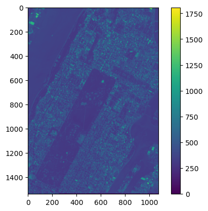
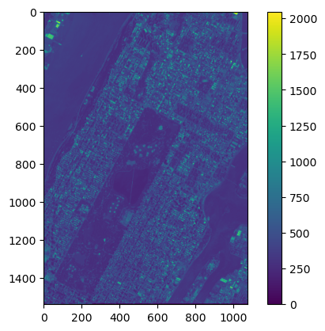
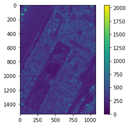
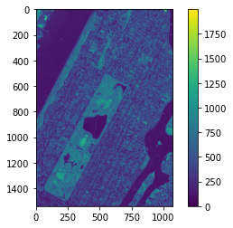
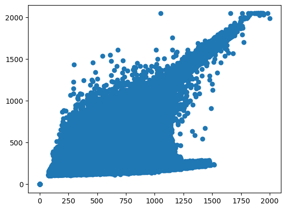
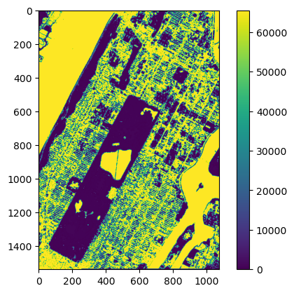
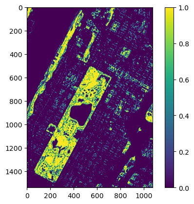

Application of numpy for image analysis#
You need to install spectral and open-cv2 packages using#
The best approach to install additional packages is using conda install: Launch the Anaconda Prompt (Windows) Type: conda activate myenv conda install -c conda-forge opencv conda install -c conda-forge spectral
#pip install opencv-python
#pip install spectral
import numpy as np
import matplotlib.pyplot as plt
import cv2
from spectral import *
import spectral.io.envi as envi
---------------------------------------------------------------------------
ModuleNotFoundError Traceback (most recent call last)
Cell In[1], line 5
3 import numpy as np
4 import matplotlib.pyplot as plt
----> 5 import cv2
6 from spectral import *
7 import spectral.io.envi as envi
ModuleNotFoundError: No module named 'cv2'
# open the image
# data are available under this [link](https://www.dropbox.com/sh/7x7r8qnsnj1895z/AABBMLv-QhHn8Gdrw0gaTBJza?dl=0)
# Download the whole NYCimg directory, and leave that directory at the same directory which NPimg.jpynb is located.
pth = 'img/'
img = envi.open(pth+'IKOM_MidNYC_2001-07-03.hdr',pth+'IKOM_MidNYC_2001-07-03')
# use this if you have your image in the current img directory
#img = envi.open('img/IKOM_MidNYC_2001-07-03.hdr','img/IKOM_MidNYC_2001-07-03')
img.shape
print(img)
Data Source: '.\img/IKOM_MidNYC_2001-07-03'
# Rows: 1539
# Samples: 1073
# Bands: 4
Interleave: BSQ
Quantization: 16 bits
Data format: uint16
img.dtype
'<u2'
plt.imshow(img[:,:,0])
plt.colorbar()
<matplotlib.colorbar.Colorbar at 0x2592e0331f0>

plt.imshow(img[:,:,1])
plt.colorbar()
<matplotlib.colorbar.Colorbar at 0x2592b73ac20>

plt.imshow(img[:,:,2])
plt.colorbar()
<matplotlib.colorbar.Colorbar at 0x159221b3af0>

plt.imshow(img[:,:,3])
plt.colorbar()
<matplotlib.colorbar.Colorbar at 0x15922277880>

plt.scatter(img[:,:,-1], img[:,:,-2])
<matplotlib.collections.PathCollection at 0x2592dd179d0>

ndvi = np.divide( (img[:,:,3]-img[:,:,2]), (img[:,:,3]+img[:,:,2]) )
#ndvi = img[:,:,-1]-img[:,:,-2]
#ndvi2 = img[:,:,-2]-img[:,:,-1]
plt.imshow(ndvi)
type(ndvi)
plt.colorbar()
C:\Users\Wenge\AppData\Local\Temp\ipykernel_36736\3952747218.py:1: RuntimeWarning: invalid value encountered in divide
ndvi = np.divide( (img[:,:,3]-img[:,:,2]), (img[:,:,3]+img[:,:,2]) )
<matplotlib.colorbar.Colorbar at 0x259302bbf70>

b4 = img[0, 0,:]
b4
array([[[376, 381, 264, 335]]], dtype=uint16)
ndvi[0,0,0]
71
ndvi2[0,0,0]
65465
Perform arithmetic operations on images using Python#
Here is a good reference.
ndvi = cv2.subtract(img[:,:,-1], img[:,:,-2])
ndvi = cv2.divide(cv2.subtract(img[:,:,-1], img[:,:,-2]), cv2.add(img[:,:,-1], img[:,:,-2]) )
plt.imshow(ndvi)
type(ndvi)
plt.colorbar()
<matplotlib.colorbar.Colorbar at 0x2592ae07700>
